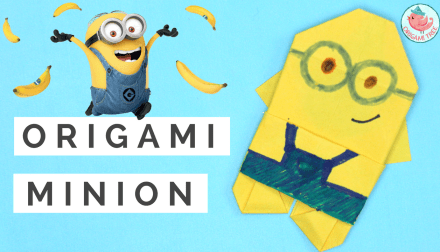
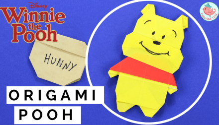

About Us
Follow Us

Steps to create bear origami design
- Origami Bear Face
- Start with a 6 inch x 6 inch (15cm x 15cm) square origami paper, color side down.
- Fold the top tip down to meet the bottom tip.
- Fold the paper in half
- Flip paper over.
- Fold the bottom tip up slightly

Steps to create minion origami design
- Origami Minion
- Wrap the yellow paper around the toilet paper roll and glue it down.
- Glue the bottle cap on and draw goggle straps with black marker.
- Pick a smile or facial expression that you want the minion to have, I like the two teeth smile look!
- Cut two skinny strips of yellow paper and cut black gloves to glue on the end.

Steps to create pooh origami design
- Origami pooh!
- Observing the process of above 2 designs,try it yourself to make pooh origami
- All The Best